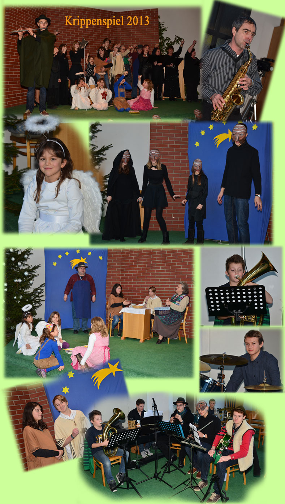
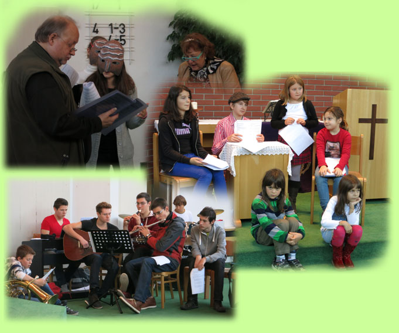
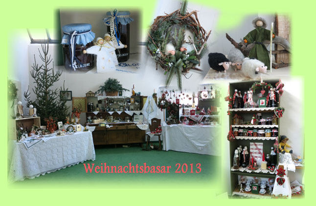
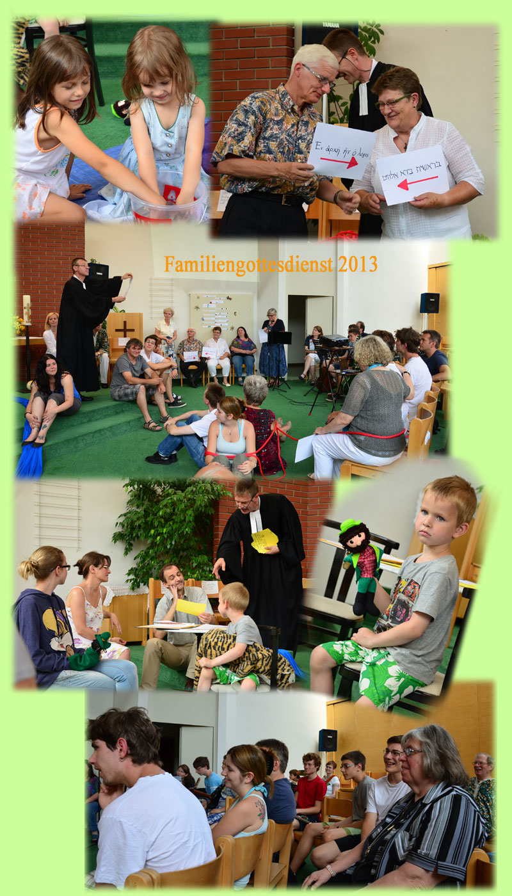
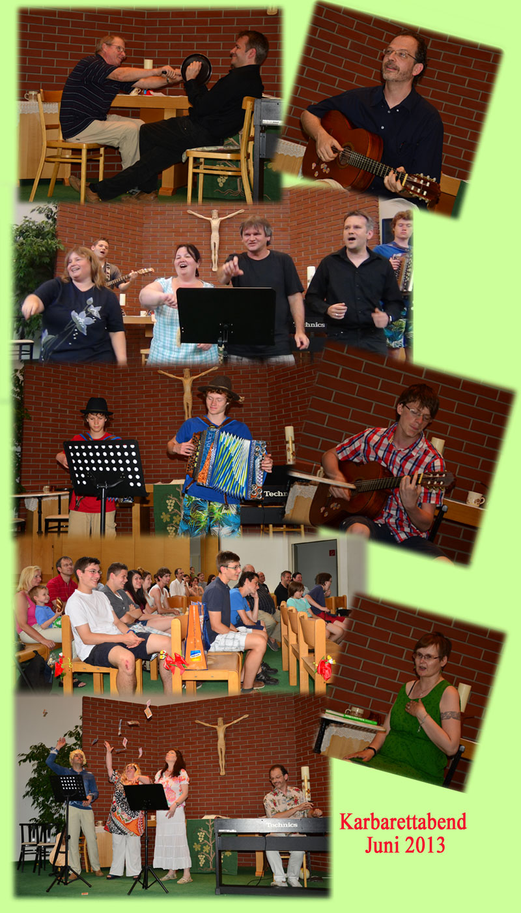
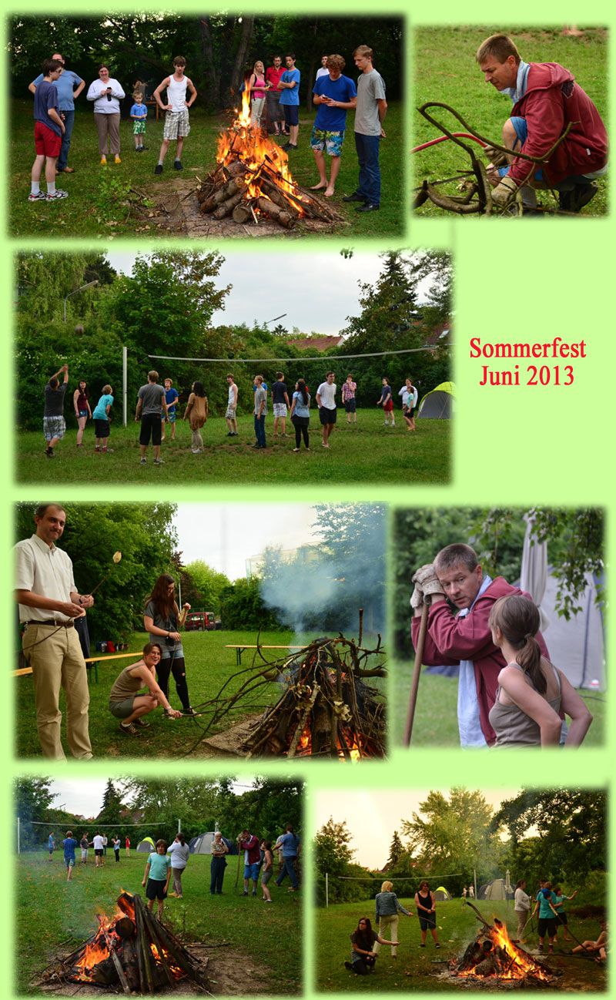
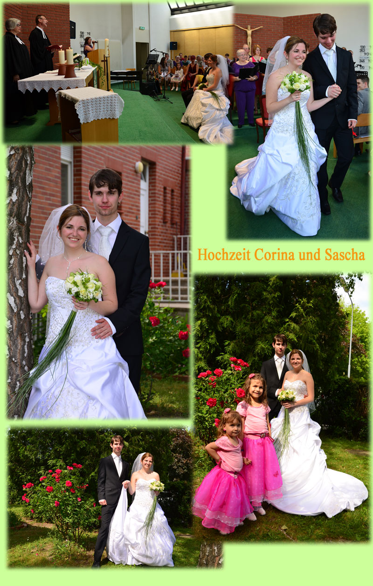
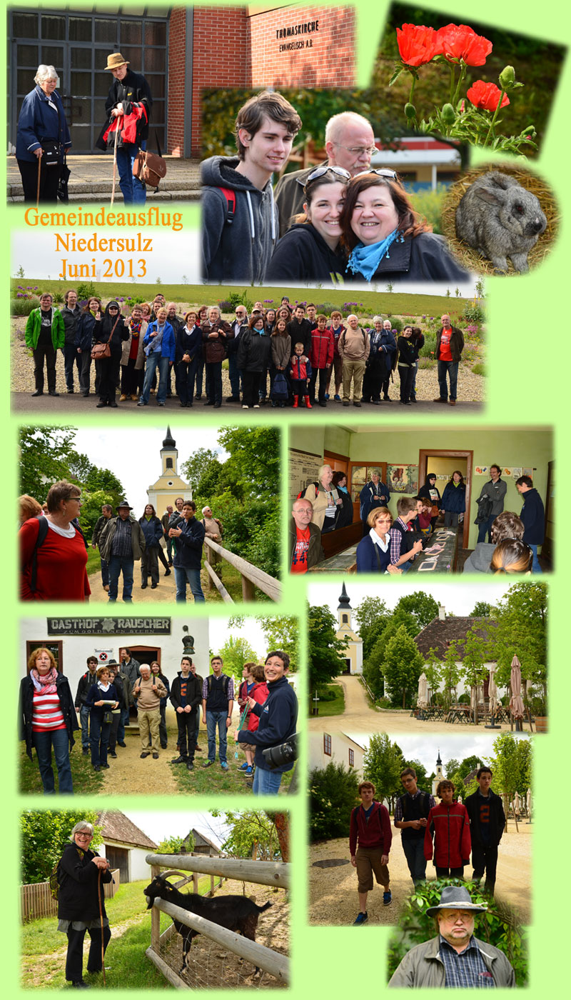
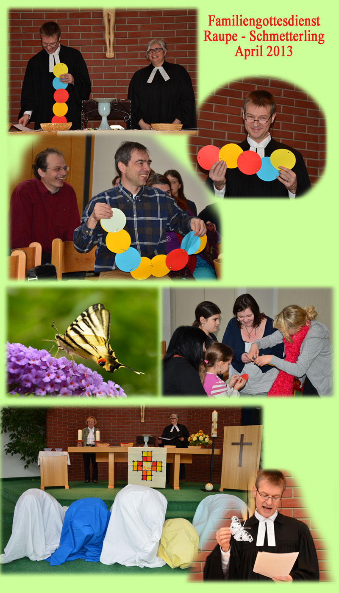
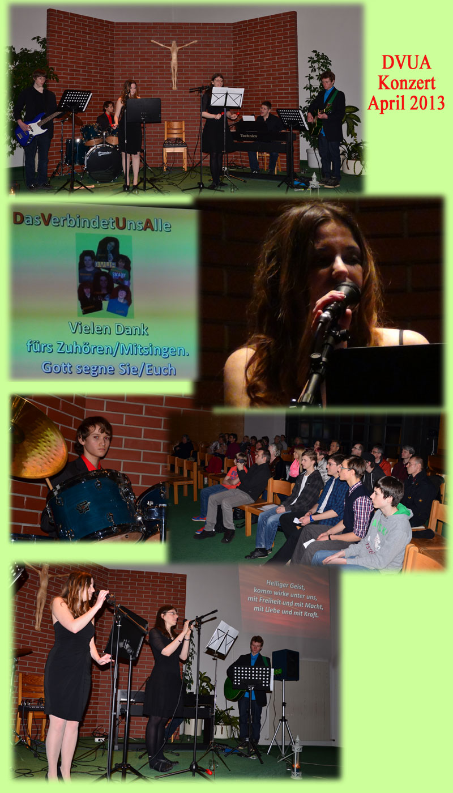

Rückblicke
-
Anfang
Krippenspiel 2013: Von Dämonen und Engel
Das Stück "Wer zündet an ein Licht" hatte inhaltlich die Herbergssuche von Maria und Josef im Zentrum;
Josef und Maria wurden von verschiedenen Menschen in ihrem Anliegen eine Unterkunft zu finden abgewiesen, wobei den möglichen Quartiergebern Dämonen ihre abwehrende Haltung einflüsterten. Das Paar kam schließlich zu einer einfachen Bauernfamilie, die sie aufnahm. Der Bauer konnte die bösen Dämonen durch seinen festen Glauben abwehren. Schließlich mündete das Stück in die friedliche Stallszene mit den Hirten.
Begleitet wurde die Handlung durch unsere rythmische Band.
-
Anfang
Krippenspielprobe: Aller Anfang ist schwer ...
Schon früh begannen die Proben für das Krippenspiel. Jeden Sonntag wurde das Stück perfekter.
-
Anfang
Adventbasar 2013: Viel Auswahl
Wunderschöne Kunstwerke und Handarbeiten gab es auf dem Weihnachtsbasar.
-
Anfang
Familiengottesdienst 23. Juni 2013
Ein Gottesdienst, bei dem fast alle miteinbezogen wurden.
-
Anfang
Kabarett-Abend 22. Juni 2013: lustig und abwechslungsreich
Viele Künstler, ein abwechslungsreiches Programm, man kann nur sagen: "Soviel Talent hat die Thomaskirche!"
-
Anfang
Sommerfest: 22. Juni 2013
Es gab wieder ein schönes Lagerfeuer fürs "Würsterlgrillen" ein voll besetzes Volleyballfeld, einige Zeltübernachter und gute Stimmung.
-
Anfang
Hochzeit Corina Buchner und Sascha Poledne: 15. Juni 2013
Herzlichen Glückwunsch und Gottes Segen zur Vermählung!
-
Anfang
Gemeindeausflug nach Niedersulz: 1. Juni 2013
Schönes Wetter, interessante Führungen durch das Museumsdorf, liebe Tiere und viele Fotos!
-
Anfang
Familiengottesdienst: 7. April 2013
Die Gemeinde wurde durch ein Raupenband verbunden. Einige spielten Raupen, die sich zu Schmetterlinge entfalteten und Kinder konnten Schmetterlinge basteln und ausmalen.
-
Anfang
DVUA-Konzert: 5. April 2013
Zum zweiten Mal spielte und sang unsere Jugendband DVUA - Das Verbindet Uns Alle Lobpreislieder zum Mitsingen und zum Genießen.